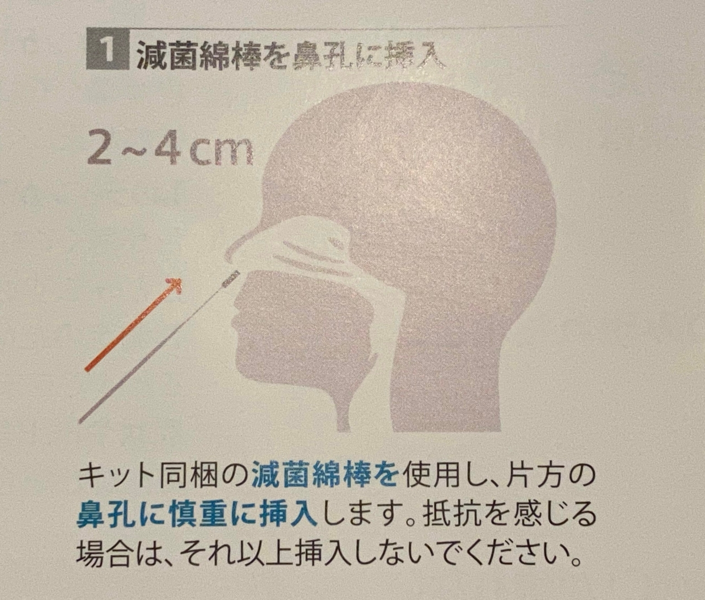
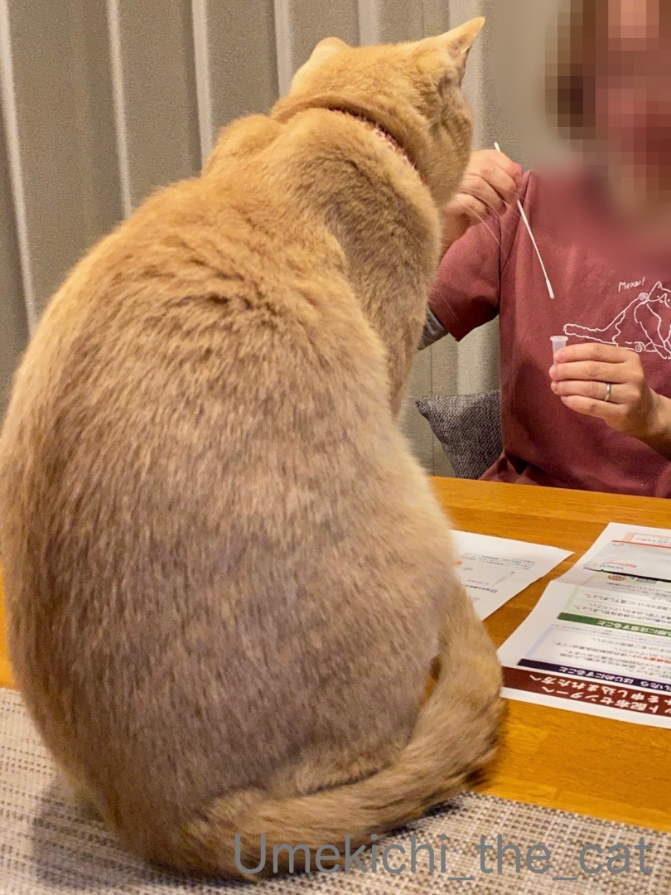
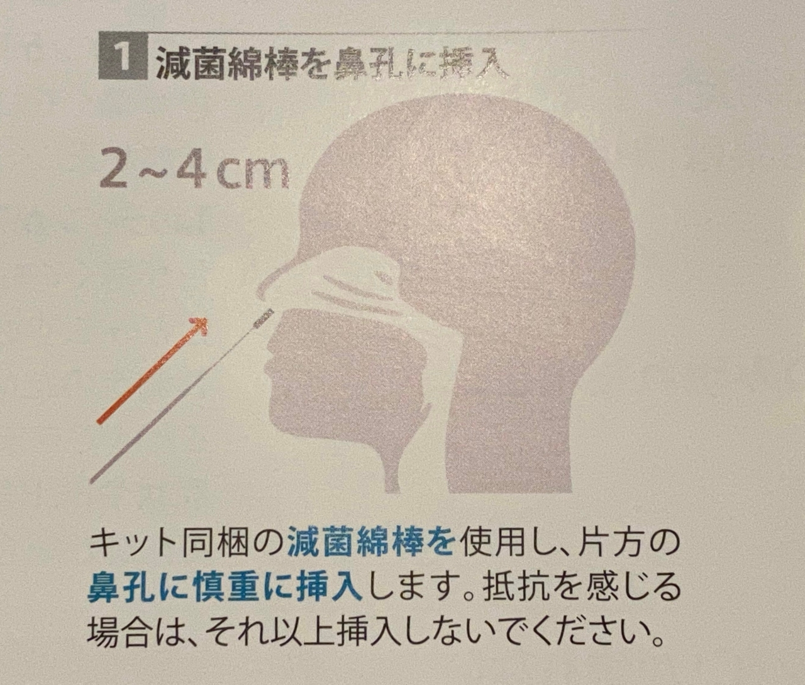
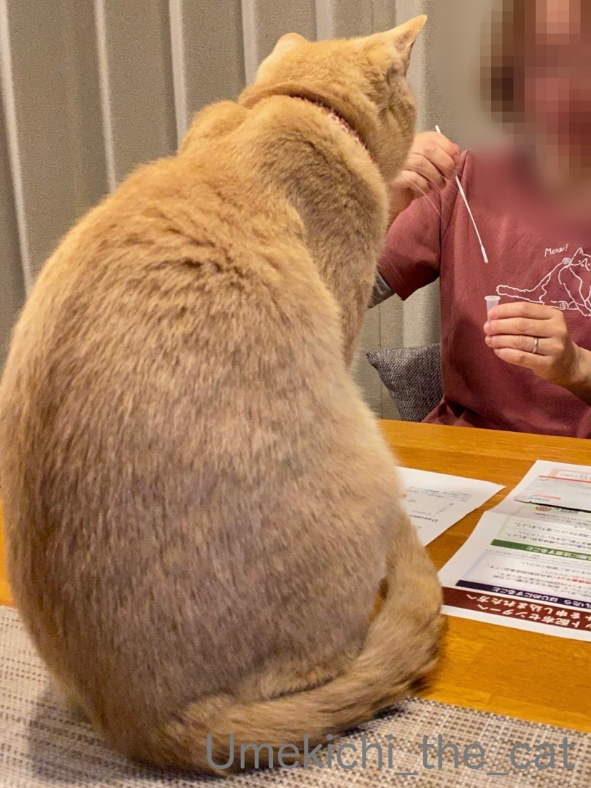

温度差 [梅吉]

朝、身支度していると梅吉が洗面ボウルにやってくるようになりました(≧∇≦)
海獣っぽい顔の角度www

少々蒸し暑くなってきたので洗面ボウルのつるりとした感触が心地よいらしい^^

くつろいでますが、滞在時間はとっても短くておかーさんの身支度の間とプラスαぐらい。
私がいなくなると起き上がってきます。
そばにいたい甘えっ子なんですよねー(≧∇≦)

甘えっ子なのに態度と目つきが冷たいことも。

幼い頃は洗面ボウルを下の方から覗き込むようにすると
喜んでねこぱんちしてくれたのに最近はしてくれないw
この日はこれ以上ないぐらい
という顔をされる (^▽^;)
いつまでも幼い頃と同じように遊んでもらおうとするおかーさんと梅吉の間には
微妙な温度差が生まれてきているようです( ᐪᐤᐪ )
進まないけど前へ！ [梅吉]

夕方、ベッドの上でお手手をびょーんと前に伸ばす梅吉。

1mmも進まないけど（笑）前へ、前へ！です。

このポーズ、おかーさんも真似して見ましたが腰が伸びて気持ちよかったですw

全く進みませんが気持ちは前へ、です、たぶん。(≧∇≦)
イリュージョニストだった頃 [梅吉]

久しぶりに折りたたみ式のサークルを出しました。
たまに風に当てないとね^^

梅吉がうちの子になった時に買ったこのサークル。これまで使ったのはたった2回。
おうちに慣れるまでの夜と留守番時に役立てようと思いましたが全然役立たなかった（笑）
初めて使ったのは梅吉が来て一日目の夜。
サークルに入れたら借りてきた猫みたいに（笑）大人しく寝たのに
二日目は入れた途端に「ここからだすんやー！」と大騒ぎ。
出してあげるとおかーさんのお布団に直行したのでした（自慢）

2回目は初めての留守番の時。
サークルの中に入れてお買い物に出かけること小一時間。
家に帰るとあれれ？梅吉がソファに寝そべっています＠＠
ファスナーの締め忘れ？どこか破れている？とチェックしましたがどこにも異常はなし。
考えられる可能性はマジックテープで止めるようになっているサークルの底からの脱出です。
マジックテープで留めるのは数箇所だけの作りなので隙間は確かにある。
（底は洗濯していたので写真には写ってません）
でもね、マジックテープで留められていない隙間に入り込んだような形跡もなかったし
サークルも倒れたりしていなかったんですよねぇ。
体が小さな時とはいえ相当細長くならないと痕跡を残さない脱出は考えられない。
当時見守りカメラがついていたらイリュージョンの瞬間が映っていたかもしれません。
残念www

サークルに入っている写真は残っていないので当時の寝顔を意味もなくアップしてみるwww
これがイリュージョニストの寝顔ですよ(≧艸≦)
梅吉が幼い頃は全然役立たなかったサークルは災害時のもしもの為に捨てずにいます。
この先も無用の長物であることを祈るわ^ｍ^
シュバっと来てシュバっと去る [梅吉]
一瞬で終わるので瞬きしないでくださいね(≧∇≦)
（6秒です＾＾ 梅吉の足音入りw キュキュキュというのは肉球の摩擦音www）
梅吉はおもちゃを追いかけているように見えて
途中で全然別の方向に走っていっちゃうんですよねぇ(^▽^;)
で、戻ってきて何度もこのパターンを繰り返すw
夕ご飯前の恒例の体重測定タイム。
遊ぶ時は活発ですが一度腰を落ち着けたらどっしり構えます。
体重を計り終わったあと「降りてもらって良いですよ。」と声をかけても
数分後に戻ってくるとそのまま乗っていることは良くあります。
静と動の落差が激しいです(≧∇≦)
（6秒です＾＾ 梅吉の足音入りw キュキュキュというのは肉球の摩擦音www）
梅吉はおもちゃを追いかけているように見えて
途中で全然別の方向に走っていっちゃうんですよねぇ(^▽^;)
で、戻ってきて何度もこのパターンを繰り返すw

夕ご飯前の恒例の体重測定タイム。
遊ぶ時は活発ですが一度腰を落ち着けたらどっしり構えます。

体重を計り終わったあと「降りてもらって良いですよ。」と声をかけても
数分後に戻ってくるとそのまま乗っていることは良くあります。
静と動の落差が激しいです(≧∇≦)
日輪を背負って飛ぶ。 [梅吉]

おお！梅吉がそこにいるということは！Ｏ(≧∇≦)Ｏ
おかーさんは慌ててスマホを取りに走りましたよ。
そして仰向けに寝転ぶ（笑）

日輪を背負っているようでかっこいい(≧∇≦)
映画なら百獣の王の登場シーンだわ。

首がにゅーっと伸びて

踏み切る瞬間Ｏ(≧∇≦)Ｏ
飛び出す姿勢がオットセイみたいwwwww

飛び移った先は洋服などを収納しているハンガーラックです。
高い所にお気に入りのベッドがあるの^^
というかいつの間にか勝手にベッドにされてしまったw

これまで足を踏み外したことは一度もありませんが
そのうちお布団などを設置して落下に備えたいと思います。
上らないでって止めても無理だからさぁ(^▽^;)
あれ？そういえば梅吉さん、お尻尾が割れてます？
猫又化してきたかしら(≧∇≦)
今度はベルト [梅吉]

一見おとーさんに甘えている様に見えますが・・・・・

梅吉がなついているのはベルト！(≧∇≦)


ベルトにしがみついてます(≧∇≦)
この後退けて欲しいおっととベルトから離れたくない梅吉との間に
一悶着あったのでしたwww
ベルトからは牛の動物臭が？？？
端午の節句はさにゃだ丸 [梅吉]

真田“信繁”幸村で知られる真田家の家紋は
「三途の川の渡し賃」である冥銭（めいせん）を意味する六文銭。
家紋としては六連銭（むつれんせん）あるいは六紋連銭（ろくもんれんせん）が正しいらしい。
六文銭の家紋には複数の意味を込めたようですがそのうちの一つが
冥銭を身に帯びいついかなる時でも死を厭わない覚悟を持って事に臨む、なんだそう。

戦国時代から江戸期にかけて軍の武具を赤で揃えることを「赤備え（あかぞなえ）」と呼びました。
戦場において赤は格好の標的になったけれど、標的になることを恐れず
また簡単には討たれないとの腕に覚えのある武勇に秀でた精鋭が身につける色だったんですって。
使い込んだ赤備えの真田軍は武士の誉、羨望と畏怖の眼差しを持って迎えられたそう。
赤は辰砂を使ったので高価でもありました。
・・・・・のような一夜漬けで知ったうんちく（笑）と共に・・・・・

さにゃだ“梅吉”幸村降臨！(≧∇≦)

腕に覚えのある精鋭部隊を率いる殿はのんびりと脇息をお使いですが（笑）
やる時は、やる！！

真田山の三光神社にて勝ち鬨！(๑•̀ㅂ•́)و✧
毎年恒例の七福神巡りで訪れる三光神社の写真がここで役立つとはwww

兜は一から十まで全ておっとの手作り、梅吉サイズの力作です^^
ネットで色々調べて「一銭の真ん中の穴は丸じゃなくて四角だ！」など大変なこだわり様。
兜の鉢の部分は張子、鹿の角は軽量紙粘土で出来ているので驚くほど軽いんですよー^ｍ^
私は寝込んでいて作業の様子はほとんど見てないのですが
張子は型の上に半紙をぺたぺた重ねて貼り付けたのち型抜きして作ったらしい。
本人曰く「張子職人の様だった」って(≧艸≦) あるいは下級武士の内職の様な？（笑）
今後、端午の節句には色々な武将の兜でシリーズ化するという噂もあるのですが
真相はまだおっとに聞いてません(≧∇≦)
シリーズ化すんのかい？せんのかい？は皆様のコメント次第かもwww
出雲旅行記は次回から再開です^^
献身的に看病していただきました [梅吉]
大阪府が重症化ローリスク者に配布する抗原定性検査キット、
申し込み後一日おいてシーメンスヘルスケア社のものが送られてきました。

結構鼻の奥まで綿棒を入れるんですねぇ(^▽^;)
この時はくしゃみと咳が出ていたので綿棒を鼻に突っ込んだ拍子に
くしゃみや咳が盛大に出て大変な事になる＝検査失敗なんて想像をするw
おまけに・・・・・

梅吉が目の前に座って何か面白いことが起きるんじゃないかと
目をキラキラさせながら見つめているので思わす吹き出しそうになる。
上の写真は笑いを堪えながら鼻の中でぐりぐりした綿棒を試薬に浸そうとしている所。
綿棒を動かす度に梅吉のていていのお手手が伸びてきそうでした(≧∇≦)
無事に作業をこなして待つこと15分。

判定は「陰性」でした。
「C」のみ線が現れると陰性、「C」「T」両方に現れると陽性。
「T」のみだと検査無効。
陽性の覚悟もできてたので宙ぶらりんな結果「検査無効」を一番恐れてました。
ちゃんと結果が出て良かったよ^^
今回の症状はどうやら単なる風邪だったようです。
家にストックしてあった総合感冒薬が効いたのはそういうわけだったのねw

多少具合が悪くても布団を敷いて寝ることは滅多にないのですが今回は流石に布団で寝た。
梅吉さんはそれは熱心に献身的に添い寝看病をしてくれました(≧∇≦)
おかーさんに思いっきり寄りかかって毛繕い。

「槍を立てる」ポーズをされるとかなり重いw

![[猫]](https://blog.ss-blog.jp/_images_e/101.gif) さ、わしのそいねで ゆっくり やすんだほうが ええで
さ、わしのそいねで ゆっくり やすんだほうが ええで
場所を移動するときは必ずおかーさんの体を踏みつけながら。
この時はお腹の上を横切って左腕の方に移動です(^▽^;)

わしが うでまくらにおると ぬくいやろ？

きっと よーねむれるで さっそく ねむなってきたわぁ
脇の下に潜り込まれるのは真夏を除いて毎晩のこと。
かなりあずましくない（笑）のは確かですが慣れると熟睡できるんですよ(≧∇≦)
まだ鼻がぐずぐずしているけれど元気に動けるようになってます。
ブログご訪問はちょっとのんびりになるかもですm(_ _)m
申し込み後一日おいてシーメンスヘルスケア社のものが送られてきました。

結構鼻の奥まで綿棒を入れるんですねぇ(^▽^;)
この時はくしゃみと咳が出ていたので綿棒を鼻に突っ込んだ拍子に
くしゃみや咳が盛大に出て大変な事になる＝検査失敗なんて想像をするw
おまけに・・・・・

梅吉が目の前に座って何か面白いことが起きるんじゃないかと
目をキラキラさせながら見つめているので思わす吹き出しそうになる。
上の写真は笑いを堪えながら鼻の中でぐりぐりした綿棒を試薬に浸そうとしている所。
綿棒を動かす度に梅吉のていていのお手手が伸びてきそうでした(≧∇≦)
無事に作業をこなして待つこと15分。
判定は「陰性」でした。
「C」のみ線が現れると陰性、「C」「T」両方に現れると陽性。
「T」のみだと検査無効。
陽性の覚悟もできてたので宙ぶらりんな結果「検査無効」を一番恐れてました。
ちゃんと結果が出て良かったよ^^
今回の症状はどうやら単なる風邪だったようです。
家にストックしてあった総合感冒薬が効いたのはそういうわけだったのねw
多少具合が悪くても布団を敷いて寝ることは滅多にないのですが今回は流石に布団で寝た。
梅吉さんはそれは熱心に献身的に添い寝看病をしてくれました(≧∇≦)
おかーさんに思いっきり寄りかかって毛繕い。
「槍を立てる」ポーズをされるとかなり重いw
場所を移動するときは必ずおかーさんの体を踏みつけながら。
この時はお腹の上を横切って左腕の方に移動です(^▽^;)
脇の下に潜り込まれるのは真夏を除いて毎晩のこと。
かなりあずましくない（笑）のは確かですが慣れると熟睡できるんですよ(≧∇≦)
まだ鼻がぐずぐずしているけれど元気に動けるようになってます。
ブログご訪問はちょっとのんびりになるかもですm(_ _)m
タグ：抗原キット検査
滑り込みセーフ？ [梅吉]

今シーズン初、夏の居場所であるキッチンカウンターでの寝姿のご披露です(≧∇≦)
早くも片目が白目っぽいw
喉の痛みと頭痛から始まった体調不良。
37℃程度の微熱が続くようになりました。頭がすごーく痛いよぉ；；
これは、ひょっとして、もしかして？と大阪府が重症化ローリスク者を対象に配布している
コロナウイルスの抗原検査キットを申し込んでみました。
届くのは今日（5月1日）の予定。
検査キットの申し込みは５類に移行する5月7日までなので
ギリギリ滑り込みセーフって感じでしょうか（笑）
症状は全然深刻じゃないしおっとは元気なので買い物の心配もなし。
濃厚接触者に当たるのはおっとだけなので気も楽です。
PCに向かうのはちょっとしんどいのでGW明けまでブログ活はお休みしますm(_ _)m
ピクミンとポケGoも出来ないのでお友達の方々ごめんなさいね。
皆様は良い連休をお過ごしくださいねー^ｍ^

カフェオレ色の梅吉

梅吉 2023年8月10日 永眠


梅吉と出会った譲渡会

犬猫の理由なき殺処分ゼロ
妄想広告
UMEKICHI 光

爆発的に早い！
時々攻撃的！
Thanks to Mr.Boss365
爆発的に早い！
時々攻撃的！
Thanks to Mr.Boss365